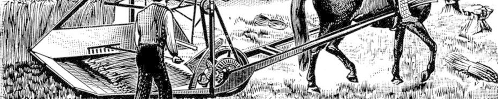

Introduction to Smart Contracts

When we think of contracts in 2014, most people will think of paperwork, signatures, notaries, lawyers, fees, and hassle. A lot of our traditional contracts are like that, although these days many contracts are digitized and done online. The digital versions of contracts however, aren’t fundamentally different from their physical counterparts. Both are examples of dumb contracts, which is to say, non interactive. They merely outline the rules of a contract and have no ability to act upon them.
What if the rules outlined in contracts were in fact executable? What if the rules of a contract worked like lines of code in a program? What if contracts contained code that could interact with the world?
Smart contracts are computer protocols that facilitate, verify, or enforce the negotiation or performance of a contract, or that obviate the need for a contractual clause. Smart contracts usually also have a user interface and often emulate the logic of contractual clauses. Proponents of smart contracts claim that many kinds of contractual clauses may thus be made partially or fully self-executing, self-enforcing, or both. Smart contracts aim to provide security superior to traditional contract law and to reduce other transaction costs associated with contracting.
Smart contract: A set of promises, including protocols within which the parties perform on the other promises. The protocols are usually implemented with programs on a computer network, or in other forms of digital electronics, thus these contracts are “smarter” than their paper-based ancestors. No use of artificial intelligence is implied.
One of the first papers that was published about smart contracts was in 1997, by Nick Szabo [1]. It’s well worth a read.
Consider an apartment complex where tenancy is registered on the blockchain, managed by programs that control access to the building. Upon payment of the rent (or otherwise agreed upon terms) each tenant’s access to the building is renewed. Owners of registered keys are granted access to the doors, various types of utilities such as washing machines, trash shoots, mail boxes, et cetera. The comparing of the user of a device against the list of allowed users can be seamless by using technology such as NFC, RFID or unique biometric identifiers that are paired with a cryptographic key. When a tenant moves out of the building, access is automatically revoked.
These same principles can be applied to businesses granting access to various parts of a company building, car rental, vacation homes, hotels, et cetera.
Smart Property
This technology can remove the need to exchange keys in person and remember passwords. Access can be limited to certain areas for maintenance personnel or temporary for guests. It would decrease the incentive for theft, as devices that only work with certain cryptographic keys are more difficult aren’t very attractive to steal. Access can be granted, adjusted or revoked based on manual input or automatically triggered by certain conditions.
Oracles

An oracle is a program that monitors external conditions as triggers for smart property. An oracle’s input can be provided by sensors or certified third parties. In the latter case, consensus averaging, weighting based on factors such as reputation and past accuracy are encouraged to improve data quality. For example, if weather forecasts are an input signal for a crop insurance program for farmers, the average of the five best weather forecast companies could be taken, each input weighted individually.
Another use case is usage tracking. A tenant in our aforementioned building might be granted ten uses of the laundry machines each month. Each time he uses a machine, his counter increments by one. When it reaches ten, access is revoked for that month or continues at a premium rate.
A different example is the distribution of the funds controlled by a will. An oracle connected to a will can monitor death ledgers, in which persons’ deaths are recorded. If the oracle detects that the owner of the will has died, the assets controlled by the will can automatically redistribute ownership as pre-programmed. Marriages, the additional of grandchildren, additional deaths can all be accounted for in the distribution formula.
Peer to Peer Financing

Sites such as Kickstarter or Indiegogo are currently market leaders in crowd funding. With the help of smart contracts, this can also be done in a decentralized manner. The basic formula of a crowd funded project is that a product will be manufactured if a certain amount is met in pledges from backers. Entrepreneurs’ public reputations and mutual insurance contracts for both backers and entrepreneurs can help mitigate risks. These projects can be done on the scale of a child’s lemonade stand or local charity, or globally for a band’s world tour or launch of a new product.
Smart Cabs

Uber and Lyft are already changing the landscape of human transportation over medium distances. They undercut cabs’ fares and drivers have rating profiles, encouraging quality. If we peer into the future and remove fallible human drivers, how could this fit in light of smart contracts?
Imagine different autonomous networks of vehicles. Some transport humans, others transport cargo. They specialize. Human transportation needs vary. Passengers with similar destinations can be transported cheaper when grouped together, such as company and school bus services. Others will want to enjoy the privacy and comfort of their private vehicle. Cargo needs vary as well, from intercontinental freight shipping to 5 minute pizza drone delivery services.
Each of the vehicles these networks is autonomous. Programs run their fleets and, like when a printer runs out of ink, can order itself new supplies. Manage profits, taken in by passengers and companies that make use of its services. Buy upgrades. Repairs. Expand. When a service can’t make a profit, it will cease to exist, just like companies in the market do today. The most successful programs will thrive, until better ones arise.
Progress

The agricultural revolution automated large parts of the work previously done manually by farm workers and workers’ productivity was diverted to other industries. Distributed, trustless networks will allow some tasks currently done by legal and financial experts, accountants and various kinds of overseers, the be performed automatically. It will lower costs and open up both existing and new markets to new audiences.
References
[1] N. Szabo, “The Idea of Smart Contracts.” 1997 [Online]. Available: http://szabo.best.vwh.net/idea.html. [Accessed: 2014/10/29]